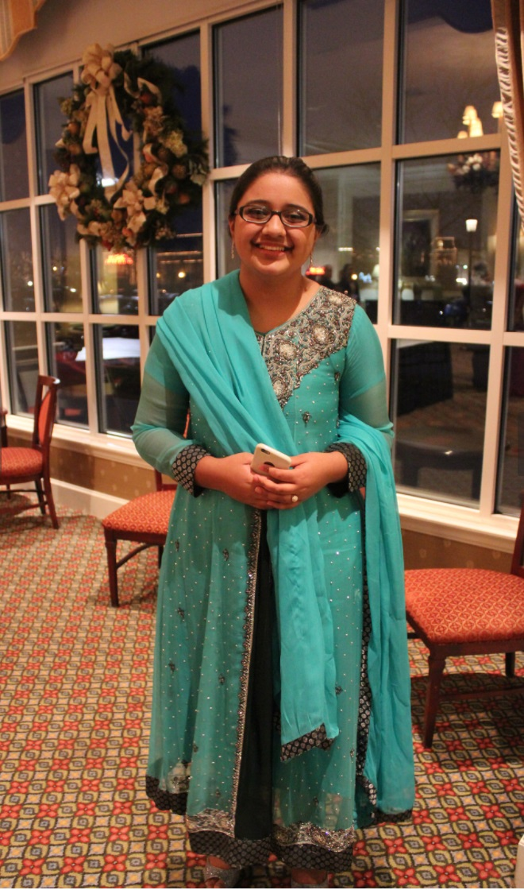

My name is Aisha and here's some random information about me: I was born in Gujrat, Pakistan and raised in Brooklyn, New York. I have an older brother and two younger brothers. I am currently majoring in Computer Science and Engineering; I've studied the C++, Java, and Python programming languages. My favorite thing to do is read. My absolute favorite books are the Harry Potter series. Other than that, I also loved reading the Sherlock Holmes books and Pride and Prejudice. My favorite tv series is definitely Game of Thrones. My favorite GoT characters have to be:
If you haven't watched Game of Thrones, I highly recommend you do, and here's a link to the HBO website so you can binge-watch this tv show before the next season starts. Though, technically you have plenty of time considering it doesn't come out till next summer (I think):
Here's a random picture of me:

I also like to learn languages and am multilingual. Because I have no idea what to put in a table, following is a table of the different languages I've studied/am fluent in and how long I've studied them.
| Language | Fluent | Years Studied |
|---|---|---|
| English | Yes | 18 |
| Urdu/Hindi | Yes | 18 |
| Punjabi | Yes | 18 |
| Arabic | Yes/No (I can read and write not speak) | 13 |
| Latin | No | 6 |
| French | No | 7 (on and off) |
| Chinese | No | 5 |
| Ancient Greek | No | 2 |